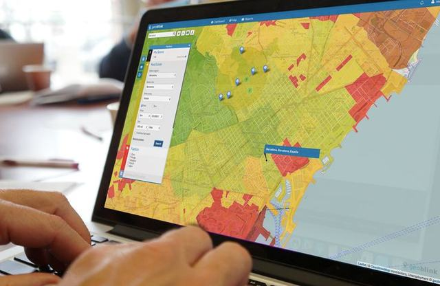
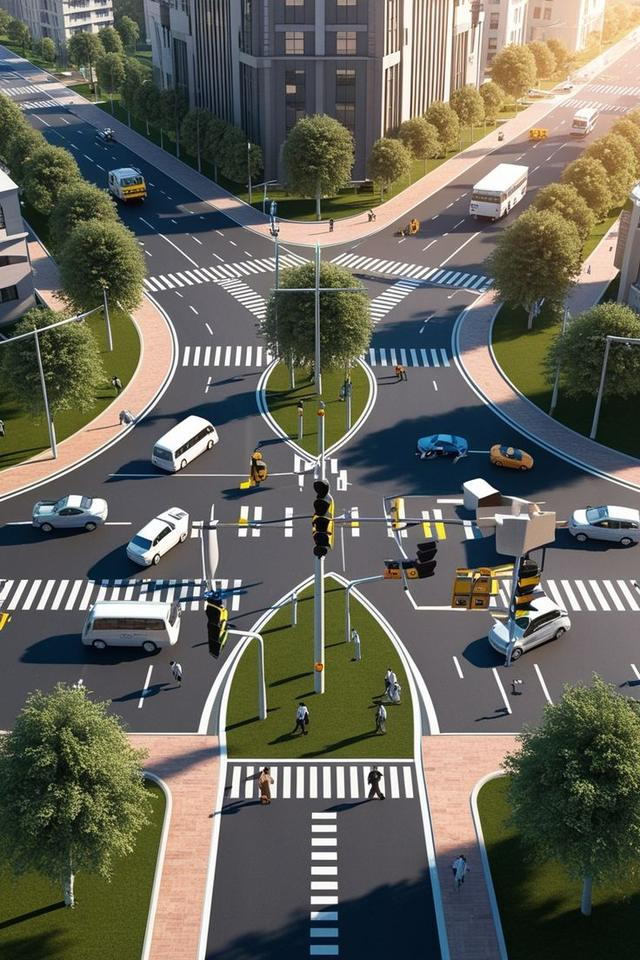

Centre de formation en géomatique
Télédétection. SIG. Territoires.
2KPI forme aujourd'hui les acteurs des territoires de demain. Notre socle : la télédétection et les SIG. Nous l'appliquons à l'urbanisme, à la démographie et à l'aménagement des territoires, avec une pédagogie 70 % pratique.
Notre socle, nos domaines d'application
Télédétection & SIG : un socle, quatre domaines d'application
Toutes nos formations partent du même socle — télédétection et SIG — pour l'appliquer à l'urbanisme, à la démographie, au paysager et au numérique.
Télédétection, SIG & cartographie
Initiation et perfectionnement QGIS, traitement d'images satellites, cartographie thématique, analyse spatiale appliquée.
Urbanisme numérique
SIG appliqué à la planification urbaine, diagnostic territorial par la donnée, outils numériques pour collectivités.
Démographie & données spatiales
Analyse des dynamiques de population, enquêtes de terrain et cartographie socio-démographique.
Aménagement paysager & SIG
Analyse spatiale paysagère, trames vertes et planification des espaces verts urbains et périurbains.
Cartographie interactive & WebSIG
Introduction au WebSIG, cartes interactives avec Leaflet, publication et diffusion de données spatiales.
Collecte de données terrain
KoboToolbox, QField, structuration et contrôle qualité des données collectées sur le terrain.
Envie de voir du WebSIG en action ? Explorez une carte interactive de la Côte d'Ivoire.
Voir la démo WebSIGQui sommes-nous
Former, avant tout : notre raison d'être
2KPI (Knowledge • Key • Planning • Innovation) est un centre de formation pratique en géomatique. Notre socle, c'est la télédétection et les SIG — la discipline d'origine de notre fondateur, géomaticien de formation.
Nous mettons ce socle au service de l'urbanisme, de la démographie, de l'aménagement paysager et des solutions numériques territoriales, au bénéfice des étudiants, professionnels, collectivités et projets de développement.
En savoir plus sur le cabinetLe terrain, en images
Nos formations et missions au plus près du réel


Pourquoi choisir 2KPI
Une pédagogie pensée pour rendre immédiatement opérationnel
- 170 % pratique
Chaque module s'appuie sur des exercices concrets, pas seulement des slides.
- 2Cas réels et données locales
Les exercices utilisent des jeux de données et des contextes ivoiriens.
- 3Formateurs experts terrain
Un encadrement issu de projets réels d'urbanisme et de géomatique.
- 4Outils numériques modernes
QGIS, KoboToolbox, QField, Leaflet, Google Earth Engine.
Nos expertises
Des compétences complémentaires au service des territoires
Une équipe animée par l'exigence de qualité et la volonté d'ancrer durablement le savoir transmis dans les pratiques professionnelles.
Géomaticien
SIG, télédétection et traitement d'images satellitaires au service de l'aide à la décision territoriale.
Urbaniste
Planification urbaine et territoriale, conception d'espaces fonctionnels et durables.
Paysagiste
Conception d'espaces paysagers durables intégrant environnement, esthétique et analyse spatiale.
Démographe
Analyse des dynamiques de population au service des politiques publiques et de l'aménagement.
Prêt à renforcer vos compétences numériques ?
Sessions courtes, parcours certifiants ou formations sur mesure : consultez le calendrier et inscrivez-vous en ligne.